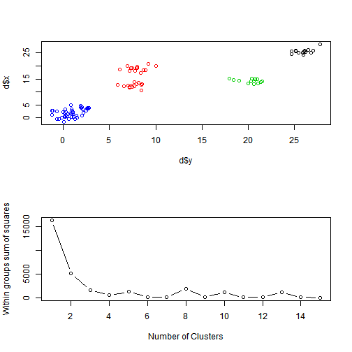

A problem when working with clustering methods can be to visualize how a specific clustering method works on a given dataset. The K-means explorer will address this problem.
abbhakan
A problem when working with clustering methods can be to visualize how a specific clustering method works on a given dataset. The K-means explorer will address this problem.
The K-means explorer visualizes how the K-mean clustering algorithm works on a randomized set of data. The user can
In the example below a user has selected a seed of 7 to generate random data. He selects 4 clusters and will get an immediate visualization of the clusters.

The app can be tried out on shinyapps: https://abbhakan.shinyapps.io/Kmean-Explorer/
Any questions or suggestions may be directed to abbhakan 'at' gmail.com.